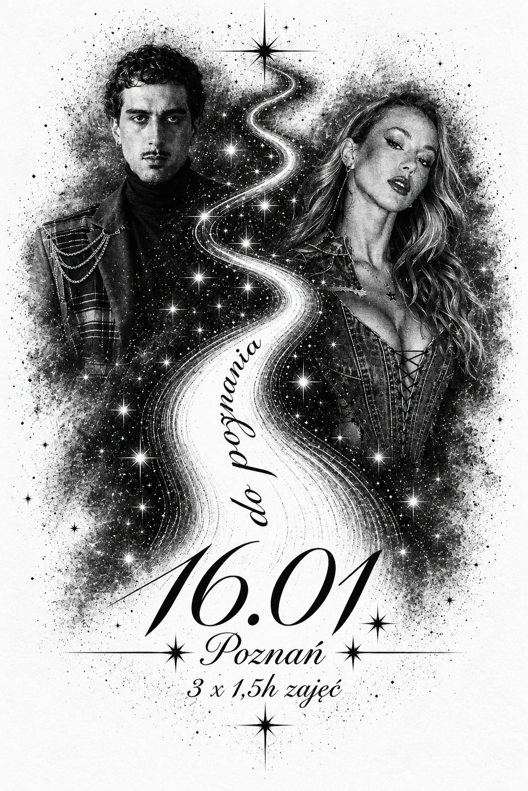

OPEN CLASS · MARTA PASTUSZKA6.12
Zapisz się Przestrzeń do wyrażania siebie, odkrywania własnych możliwości i budowania relacji, które zaczynają się od wspólnej pasji.
O projekcieOpen Class z Martą Pastuszką oraz DO POZNANIA vol. II — Klaudia Kosierb i Kuba Pękala.

Każda edycja DO POZNANIA jest inna. Tworzą ją ludzie, ich historie, energia i emocje.
Zobacz zdjęciaArchiwum to zapis naszych wspólnych doświadczeń. Zdjęcia i filmy z minionych wydarzeń.
Otwórz archiwumMasz pytanie dotyczące warsztatów? Chcesz nawiązać współpracę, dołączyć do projektu lub podzielić się pomysłem?
do.poznania.workshops@gmail.comKażde spotkanie to nowa możliwość. Nowe inspiracje, nowe znajomości i kolejna okazja, żeby zrobić coś dla siebie. Jeśli czujesz, że to przestrzeń, w której chcesz być, wypełnij formularz zgłoszeniowy. Zostaw nam swoje dane, a my skontaktujemy się z Tobą mailowo i przeprowadzimy Cię przez cały proces rejestracji.
Liczba uczestników jest ograniczona, ponieważ zależy nam na zachowaniu kameralnego charakteru każdego spotkania i jakości wspólnego doświadczenia.Twoja wiadomość została wysłana. Do zobaczenia na wydarzeniu!
Wróć na początek